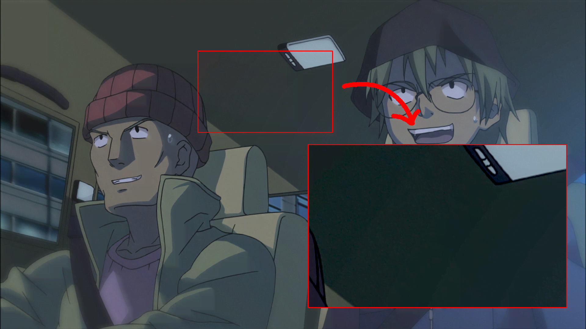

Banding
Banding appears as visible steps or contours in what should be a smooth gradient. Skies, soft shadows, fades, and dark flat areas reveal it most readily.
Luma banding
This image has been brightened to make the contours easier to see.

Why it happens
Video stores only a finite number of sample values. When a gradient needs more intermediate values than are available, several intended colors map to the same value and the transition becomes stepped. Low-precision processing, lossy compression, and repeated conversions can make the steps larger.
Increasing the bit depth after banding is present does not recreate the lost shades. It only gives later processing more precision.
Chroma banding
Banding may be stronger in the chroma planes, which are commonly subsampled and compressed more heavily than luma. Instead of light and dark contours, it appears as regions of slightly different color.
Chroma banding
Should it be fixed?
Debanding replaces suspicious samples with nearby values. The same operation can erase subtle texture, line shading, or intentional gradients. Use the lowest effective strength and compare moving footage, not only enlarged still frames.
Strong banding is often best handled scene-by-scene. A detail mask can protect texture, but it cannot perfectly distinguish detail from every band.
Debanding choices
The libplacebo and f3kdb algorithms are both common choices. Neither is a universal default: their behavior and parameter scales differ, and preference often depends on the source and encoder.
Libplacebo algorithm
vszipcl
and vszipcu
provide OpenCL and CUDA implementations
of libplacebo's debanding algorithm.
Unlike the original vsplacebo interface,
they accept multiple planes and per-plane values directly.
Their current call signatures are documented by
the vszipcl Deband API
and vszipcu filter reference.
Transitional vsdeband wrapper
vsdeband.placebo_deband wraps the original Vulkan-based
placebo.Deband plugin
to normalize planes and per-plane parameters.
It may be removed in the near future:
the OpenCL and CUDA replacements expose
the functionality that required a wrapper in the original plugin.
Existing scripts can keep using it for now,
but new long-lived examples should prefer a direct replacement interface.
For an existing Vulkan setup,
the current
placebo_deband
compatibility wrapper is:
f3kdb algorithm
f3k_deband
wraps the CPU-based
vszip.Deband
implementation of the f3kdb process.
The strengths are not interchangeable
threshold=3.0 for placebo and thr=96 for f3kdb
are examples in different scales,
not equivalent settings.
Never copy a value from one algorithm into the other.
Prefiltered debanding
pfdeband
can help when existing grain or noise interferes with band detection.
Its prefilter argument creates the blurred working clip;
the default is
gauss_blur.
It runs the selected debander on that prefiltered clip,
then adds the limited difference between the debanded and original
prefiltered clips back to the source.
The prefilter's blur is therefore undone
while the debanding changes are retained.
Prefiltering increases debanding strength
pfdeband can make any selected debander significantly stronger
because grain and fine detail no longer hinder its decisions.
Start with lower strengths than for a direct debander call
and check carefully for lost texture,
shading,
and line detail.
Regraining
Debanding and denoising remove variation
that helps hide quantization during the next encode.
Adding controlled dynamic grain afterward
can protect the new gradient.
Grainer
documents the available grain types and protections.
Match the source rather than adding conspicuous grain.
Grain built into a debander is convenient,
while Grainer wraps the vs-noise generators
with legal-range protection,
optional neutral-chroma protection,
luma-adaptive masking,
and more control
over size,
temporal behavior,
and luma adaptation.
See Noise and grain
for the Gaussian,
Perlin,
simplex,
fractional Brownian motion,
Poisson,
and libplacebo options.